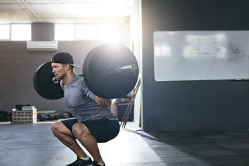
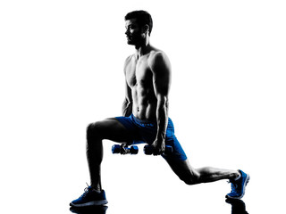
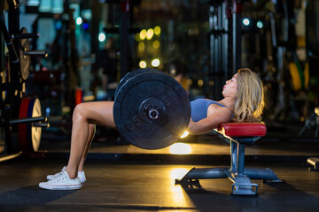

SQUATS:
How do you do them?

Stand with the bar on your upper-back, or dumbell in your handd in front of you, and your feet
shoulder-width apart.
Move downwards into a seated position, pushing your knees to the side while moving hips back, and
keeping your back straight.
Go down into a seated position until your hips are lower than your knees.
Stand back up while keeping your knees out and chest up.
Stand with your hips and knees locked at the top.
Hold the weight for a second at the top, and take a deep breath, then repeat as necessary.
This moovement can be performed with just bodyweight aswell. Instead of a barbell or dumbbell, you'd
position your hands out in front of you, for balance.
What muscles do they target?
This exercise targets the gluteus maximus, minimus, and medius (buttocks), quadriceps (front of the
thigh), hamstrings (back of the thigh), adductor (groin), hip flexors, calves, and the abdominal
muscles as well.
LUNGES:
How do you do them?

This movement can be done with either weights or just bodyweight. If bodyweight, you'll just place
yout hands on your hips, and if with weights, you'll hold a weight either on one side, or on both
sides.
Stand with your legs shoulder-width apart, then step forward with one leg. Step forwards with one
leg into a long stride and lower into a lunge, bending both knees and keeping your posture upright,
as well as ensuring your knees don't pass your toes. Drive through your front heel to return to the
standing position, then repeat with the opposite leg.
What muscles do they target?
This exercise targets the gluteus maximus, hamstrings, quadriceps, and gastrocnemius/soleus (calves).
HIP THRUSTS:
How do you do them?

Sit with your upper back against a box or bench, feet flat on the floor in front of you. The bottom
of
your shoulder blades should rest against the edge of the box/bench. This movement can be done with
weights or just bodyweight. If bodyweight,
you can rest your hands on the edge of the bench/box by your side, and if done with weights you can
place a dumbbell or two dumbbells on your hips just below the pelvis. Make sure to hold on to them
throughout the exercise.
Engage the core and squeeze the glutes to flatten the lower back, then push through your heels to
drive
your hips up, stopping when your body is in a straight line from shoulders to knees, and shins are
vertical.
Pause and squeeze the glutes before slowly lowering back to the start, keeping the spine neutral
throughout. Repeat as necessary.
What muscles do they target?
This exercise targets the gluteus maximus, which is the biggest muscle in your body. It also
activates
the hamstrings, quadriceps, and adductors.